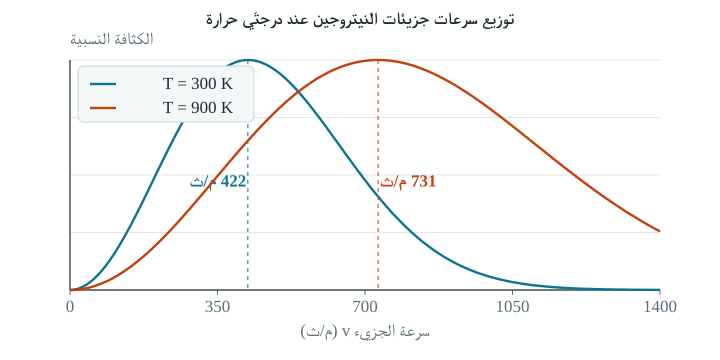

درجة الحرارة
Temperature
خاصية مكثّفة تقيس شدّة الحالة الحرارية للنظام، وتُعرَّف في الغاز أحادي الذرة بأنها متوسّط الطاقة الحركية الانتقالية للجزيء الواحد مضروبة في (3/2)k_B. وهي التي تحدّد اتجاه انتقال الطاقة حرارةً، لا مقدارها.
درجة الحرارة ليست مقياسًا لكمية الطاقة في الجسم، بل لمتوسّط نصيب الجزيء الواحد منها. في غاز أحادي الذرة لا توجد إلا حركة انتقالية، فتُساوي درجة الحرارة الحركية متوسّط الطاقة الحركية الانتقالية للجزيء: ⟨E_k⟩ = (3/2)k_B·T، حيث k_B ثابت بولتزمان. لذلك تبقى درجة الحرارة كما هي إذا ضاعفنا كمية الغاز وتركنا متوسّط السرعة على حاله، بينما تتضاعف الطاقة الحرارية الكلية.
تظهر درجة الحرارة عمليًّا بوصفها شرط التوازن الحراري: إذا وُضع جسمان في تماس ولم ينتقل بينهما صافٍ طاقة، فهما في درجة الحرارة نفسها (القانون الصفري للديناميكا الحرارية). من هذا الشرط بُنيت المقاييس التجريبية: تتمدد الزئبق والكحول والترمومترات الكهربائية بدرجات مختلفة عن الحرارة، فتقرأ «درجة الحرارة» عبر خاصية فيزيائية متغيّرة بانتظام، لا عبر قياس الطاقة مباشرة. وهذا هو سبب كونها مكثّفة: تُقاس عند نقطة واحدة ولا تُجمع عبر أجزاء النظام.
كيف تعمل الظاهرة؟
الحرارة في المنبع الحراري الجزيئي هي توزيع إحصائي لطاقات حركة الجزيئات، لا سرعة واحدة. تصطدم الجزيئات تصادمًا مرنًا ويتبادل بعضها الطاقة، فيستقرّ التوزيع على شكل ماكسويل–بولتزمان: عدد الجزيئات في مدى سرعة معيّن دالة غير متناظرة تمتدّ ذيلًا طويلًا نحو السرعات العالية. درجة الحرارة تحدّد موضع قمة هذا التوزيع وعرضه: رفعها يزحزح القمة نحو سرعات أعلى ويُسطّح المنحنى، لأن المساحة تحته ثابتة (احتمال 1). الترمومتر يقيس هذا الأثر غير المباشر: عند تماسّه بالنظام تنتقل الطاقة حتى تتساوى متوسّطات الطاقة الحركية، فيستقرّ طول عمود الزئبق عند قيمة تقابل درجة الحرارة المشتركة.
العلاقة بالأرقام
للجزيء في غاز أحادي الذرة ⟨E_k⟩ = (3/2)k_B·T، وبـ k_B = 1.380649×10⁻²³ J/K عند 300 K يكون المتوسّط 6.21×10⁻²¹ J لكل جزيء. متوسط السرعة يُقارَب بالسرعة الجذرية التربيعية v_rms = √(3k_B·T/m)، فجزيء النيتروجين (m = 4.65×10⁻²⁶ kg) يبلغ 517 م/ث عند 300 K و895 م/ث عند 900 K، أي زيادة 1.73 مرة مقابل ثلاثة أمثال الطاقة لأن v² ∝ T. الوحدة كلفن مُعرَّفة منذ 2019 بثابت بولتزمان نفسه: 1 K يقابل 1.380649×10⁻²³ J من الطاقة لكل درجة حرية جزيئية، ويربط ذلك الصفر المطلق (−273.15 °C) بحدّ أدنى لا توجد دونه حركة انتقالية.
مفاهيم متقاربة
الخطأ الشائع مساواة درجة الحرارة بالطاقة الحرارية. عود ثقاب محترق أعلى حرارةً من جبل جليدي، لكن الطاقة الحرارية المخزونة في الجبل أكبر بمراتب، لأنها مجموع طاقات جزيئات عدد هائل يتقاسم متوسّطًا منخفضًا. الفصل الثالث هو الحرارة (Heat): انتقال طاقة عبر فرق حرارة، وهي عملية لا حالة، تُقاس بالجول وتُسند إلى مسار، فلا يُقال «للجسم حرارة» بل «دخلته حرارة». ودرجة الحرارة مكثّفة لا تتغيّر بجزء النظام، والطاقة الحرارية والسعة الحرارية شاملتان تتضاعفان مع الكتلة.
حدود التطبيق
لا تُعرَّف درجة الحرارة تعريفًا واحدًا خارج التوازن: في بلازما غير متوازنة قد تختلف «حرارة» الإلكترونات عن حرارة الأيونات، ولكل نوع درجة حرارية خاصة. وفي المواد ذات الأنماط الدورانية والاهتزازية (الجزيئات متعدّدة الذرات والأجسام الصلبة) لا تكفي (3/2)k_B·T بل تُوزَّع الطاقة على درجات الحرية بالتساوي، فترتفع السعة الحرارية. وفي أنظمة الانقلاب السكاني (الليزر) تُستخدم «درجات حرارة سالبة» اصطلاحًا لأن العدد في المستوى الأعلى أكثر، وهي أسخن من اللانهاية لا أبرد من الصفر المطلق. أما عند السرعات القريبة من الضوء فتحتاج الصيغة التوزيعية شكلها النسبي.


| الكمية | القيمة | المصدر |
|---|---|---|
| الصفر المطلق | 0 كلفن = −273.15 °C | [1] |
| ثابت بولتزمان k_B | 1.380649×10⁻²³ جول/كلفن | [2] |
| متوسط الطاقة الحركية للجزيء عند 300 K | 6.21×10⁻²¹ جول | [3] |
| السرعة الجذرية التربيعية للنيتروجين عند 300 K | 517 متر/ثانية | [3] |
المصادر
- 1 Temperature — Encyclopaedia Britannica. www.britannica.com/science/temperature · اطُّلع عليه 2026-11-13
- 2 The International System of Units (SI Brochure), 9th edition — kelvin defined by fixed k_B — BIPM. www.bipm.org/en/publications/si-brochure · اطُّلع عليه 2026-11-13
- 3 Kinetic theory of gases — Encyclopaedia Britannica. www.britannica.com/science/kinetic-theory-of-gases · اطُّلع عليه 2026-11-13
- 4 Kinetic temperature — HyperPhysics, Georgia State University. hyperphysics.phy-astr.gsu.edu/hbase/thermo/temper.html · اطُّلع عليه 2026-11-13
استشهد بهذا المصطلح
الصيغتان مبنيتان من بيانات الصفحة نفسها: العنوان والتاريخ ورابط النسخة المنشورة.
درجة الحرارة — Temperature. (2026). ديوان المعرفة — انفراد. https://infiradev.com/diwan/terms/temperature.html
@misc{temperature2026,
title = {درجة الحرارة},
titleaddon = {Temperature},
howpublished = {{ديوان المعرفة — انفراد} — مرجع علمي عربي},
year = {2026},
url = {https://infiradev.com/diwan/terms/temperature.html},
urldate = {2026-11-16},
note = {مراجعة علمية: عبدالله الهويدي — مراجعة في تطبيق انفراد}
}
راجعه: عبدالله الهويدي — مراجعة في تطبيق انفراد · 2026-11-16 · آخر تحديث 2026-11-16